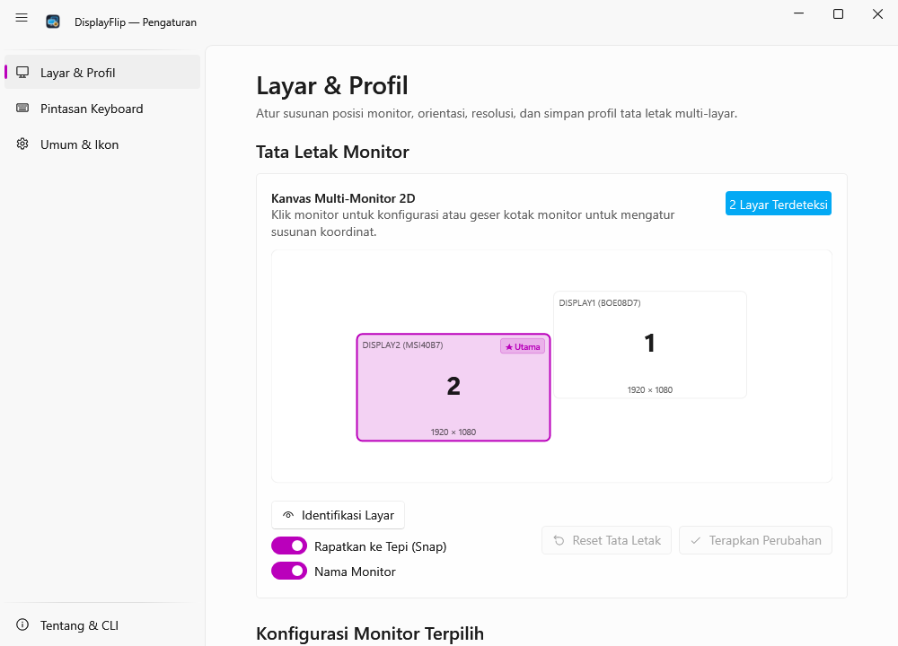

The Cleanest Way to Switch Multi-Monitor Layouts on Windows
Save custom monitor positions, swap left & right screens, wake sleeping displays from Solo mode, and assign global keyboard shortcuts — built cleanly with native Win32 display APIs.
DisplayFlip-v1.1.0-win-x64.zip
Fast 6.87 MB executable for PCs with .NET 10 Desktop Runtime installed. Lightweight tray startup.
DisplayFlip-v1.1.0-Standalone-win-x64.exe
Zero dependencies required. Everything bundled into one portable file — ideal for USB drives or work laptops.

Interactive Topology Behavior Simulator
See how DisplayFlip prevents broken layouts when switching from PC Screen Only (Solo) or when an external monitor is unplugged.
Instant System Tray Control
Right-click the tray icon anytime for Quick Swap, Identify overlays, Solo 1 / Solo 2 / Extend modes, or saved profiles.
Conflict-Safe Global Hotkeys
Bind 6 global actions plus unlimited per-profile keyboard shortcuts without fighting existing Windows shortcuts.
Hardware Monitor Model Labels
Identifies screens with real hardware IDs like DISPLAY2 (MSI40B7) so you never mix up identical monitors.
Scriptable CLI Ready
Trigger switches from Stream Deck, AutoHotkey, PowerShell, or Task Scheduler with --apply, --swap, and --list --json.
Frequently Asked Questions
Why use DisplayFlip instead of pressing Win + P?
Win + P only toggles basic modes (PC screen only, Duplicate, Extend, Second screen only). It cannot save left/right coordinates, swap which screen is Primary, remember portrait orientation, or restore a multi-display profile cleanly from a single hotkey or CLI script.
Does closing the DisplayFlip window quit the app?
Clicking X minimizes DisplayFlip to the System Tray so your global shortcuts keep working. Choose Exit from the System Tray menu whenever you want to close it completely.
Is DisplayFlip free and safe to run on Windows 11?
Yes — DisplayFlip is 100% free, open source on GitHub, and uses official Windows CCD display APIs with zero background telemetry.